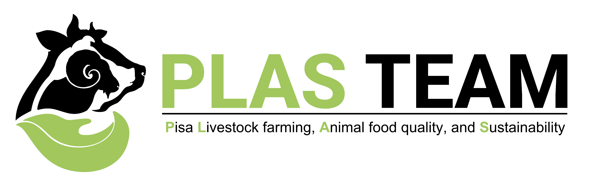
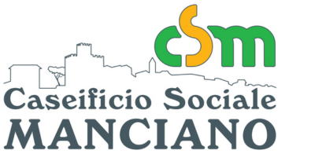

<!DOCTYPE html>
<html>
<head>
    
    <meta http-equiv="content-type" content="text/html; charset=UTF-8" />
    <script src="https://cdn.jsdelivr.net/npm/leaflet@1.9.3/dist/leaflet.js"></script>
    <script src="https://code.jquery.com/jquery-3.7.1.min.js"></script>
    <script src="https://cdn.jsdelivr.net/npm/bootstrap@5.2.2/dist/js/bootstrap.bundle.min.js"></script>
    <script src="https://cdnjs.cloudflare.com/ajax/libs/Leaflet.awesome-markers/2.0.2/leaflet.awesome-markers.js"></script>
    <link rel="stylesheet" href="https://cdn.jsdelivr.net/npm/leaflet@1.9.3/dist/leaflet.css"/>
    <link rel="stylesheet" href="https://cdn.jsdelivr.net/npm/bootstrap@5.2.2/dist/css/bootstrap.min.css"/>
    <link rel="stylesheet" href="https://netdna.bootstrapcdn.com/bootstrap/3.0.0/css/bootstrap-glyphicons.css"/>
    <link rel="stylesheet" href="https://cdn.jsdelivr.net/npm/@fortawesome/fontawesome-free@6.2.0/css/all.min.css"/>
    <link rel="stylesheet" href="https://cdnjs.cloudflare.com/ajax/libs/Leaflet.awesome-markers/2.0.2/leaflet.awesome-markers.css"/>
    <link rel="stylesheet" href="https://cdn.jsdelivr.net/gh/python-visualization/folium/folium/templates/leaflet.awesome.rotate.min.css"/>
    
            <meta name="viewport" content="width=device-width,
                initial-scale=1.0, maximum-scale=1.0, user-scalable=no" />
            <style>
                #map_ce6b80ac162f6c2f32f46c6405c3a856 {
                    position: relative;
                    width: 100.0%;
                    height: 100.0%;
                    left: 0.0%;
                    top: 0.0%;
                }
                .leaflet-container { font-size: 1rem; }
            </style>

            <style>html, body {
                width: 100%;
                height: 100%;
                margin: 0;
                padding: 0;
            }
            </style>

            <style>#map {
                position:absolute;
                top:0;
                bottom:0;
                right:0;
                left:0;
                }
            </style>

            <script>
                L_NO_TOUCH = false;
                L_DISABLE_3D = false;
            </script>

        
    <script src="https://cdn.jsdelivr.net/npm/leaflet-textpath@1.2.3/leaflet.textpath.min.js"></script>
</head>
<body>
    
    
            <div class="folium-map" id="map_ce6b80ac162f6c2f32f46c6405c3a856" ></div>
        
</body>
<script>
    
    
function pulseMarker(marker, maxRadius, minRadius, duration) {
    let growing = true;
    let radius = minRadius;
    setInterval(function() {
        if(growing) {
            radius += 0.1;
            if(radius >= maxRadius) growing = false;
        } else {
            radius -= 0.1;
            if(radius <= minRadius) growing = true;
        }
        marker.setRadius(radius);
    }, duration);
}
    pulseMarker(circle_marker_d2db019431b14986ed969f98067024d6, 18, 8, 50);
    pulseMarker(circle_marker_a0b9c086145cf24223509d9f4ff19a9c, 18, 8, 50);
    pulseMarker(circle_marker_d2204e48d5f11a8087af7049583fe8b7, 18, 8, 50);
    
            var map_ce6b80ac162f6c2f32f46c6405c3a856 = L.map(
                "map_ce6b80ac162f6c2f32f46c6405c3a856",
                {
                    center: [43.0, 11.0],
                    crs: L.CRS.EPSG3857,
                    ...{
  "zoom": 7,
  "zoomControl": true,
  "preferCanvas": false,
}

                }
            );

            

        
    
            var tile_layer_457f068db4ae5bb91ca7a601c936dad0 = L.tileLayer(
                "https://{s}.basemaps.cartocdn.com/dark_all/{z}/{x}/{y}{r}.png",
                {
  "minZoom": 0,
  "maxZoom": 20,
  "maxNativeZoom": 20,
  "noWrap": false,
  "attribution": "\u0026copy; \u003ca href=\"https://www.openstreetmap.org/copyright\"\u003eOpenStreetMap\u003c/a\u003e contributors \u0026copy; \u003ca href=\"https://carto.com/attributions\"\u003eCARTO\u003c/a\u003e",
  "subdomains": "abcd",
  "detectRetina": false,
  "tms": false,
  "opacity": 1,
}

            );
        
    
            tile_layer_457f068db4ae5bb91ca7a601c936dad0.addTo(map_ce6b80ac162f6c2f32f46c6405c3a856);
        
    
            var circle_marker_d2db019431b14986ed969f98067024d6 = L.circleMarker(
                [43.715, 10.401],
                {"bubblingMouseEvents": true, "color": "cyan", "dashArray": null, "dashOffset": null, "fill": true, "fillColor": "cyan", "fillOpacity": 0.9, "fillRule": "evenodd", "lineCap": "round", "lineJoin": "round", "opacity": 1.0, "radius": 8, "stroke": true, "weight": 3}
            ).addTo(map_ce6b80ac162f6c2f32f46c6405c3a856);
        
    
        var popup_fd54a3be717dd6890cf32427a1bc8877 = L.popup({
  "maxWidth": 200,
});

        
            
                var html_c0e3f1bc32f1204a7e618cbb689e6383 = $(`<div id="html_c0e3f1bc32f1204a7e618cbb689e6383" style="width: 100.0%; height: 100.0%;">     <div style="text-align:center;">         <h4 style="color: cyan;">PLAS_TEAM</h4>         <p style="color: white;">Researcher del progetto</p>              </div>     </div>`)[0];
                popup_fd54a3be717dd6890cf32427a1bc8877.setContent(html_c0e3f1bc32f1204a7e618cbb689e6383);
            
        

        circle_marker_d2db019431b14986ed969f98067024d6.bindPopup(popup_fd54a3be717dd6890cf32427a1bc8877)
        ;

        
    
    
            var circle_marker_a0b9c086145cf24223509d9f4ff19a9c = L.circleMarker(
                [42.763, 11.113],
                {"bubblingMouseEvents": true, "color": "cyan", "dashArray": null, "dashOffset": null, "fill": true, "fillColor": "cyan", "fillOpacity": 0.9, "fillRule": "evenodd", "lineCap": "round", "lineJoin": "round", "opacity": 1.0, "radius": 8, "stroke": true, "weight": 3}
            ).addTo(map_ce6b80ac162f6c2f32f46c6405c3a856);
        
    
        var popup_21e0729138630a72a1532342013096e4 = L.popup({
  "maxWidth": 200,
});

        
            
                var html_6774047e3f755174b5ff5a8e7ad4455d = $(`<div id="html_6774047e3f755174b5ff5a8e7ad4455d" style="width: 100.0%; height: 100.0%;">     <div style="text-align:center;">         <h4 style="color: cyan;">Consorzio Pecorino Toscano DOP</h4>         <p style="color: white;">Consorzio di valorizzazione</p>              </div>     </div>`)[0];
                popup_21e0729138630a72a1532342013096e4.setContent(html_6774047e3f755174b5ff5a8e7ad4455d);
            
        

        circle_marker_a0b9c086145cf24223509d9f4ff19a9c.bindPopup(popup_21e0729138630a72a1532342013096e4)
        ;

        
    
    
            var circle_marker_d2204e48d5f11a8087af7049583fe8b7 = L.circleMarker(
                [42.534, 11.504],
                {"bubblingMouseEvents": true, "color": "cyan", "dashArray": null, "dashOffset": null, "fill": true, "fillColor": "cyan", "fillOpacity": 0.9, "fillRule": "evenodd", "lineCap": "round", "lineJoin": "round", "opacity": 1.0, "radius": 8, "stroke": true, "weight": 3}
            ).addTo(map_ce6b80ac162f6c2f32f46c6405c3a856);
        
    
        var popup_5a8f31cc872e14d37b42babb382317c0 = L.popup({
  "maxWidth": 200,
});

        
            
                var html_7c27ffa237eed4e7b0549ad03f677119 = $(`<div id="html_7c27ffa237eed4e7b0549ad03f677119" style="width: 100.0%; height: 100.0%;">     <div style="text-align:center;">         <h4 style="color: cyan;">Caseificio Sociale di Manciano</h4>         <p style="color: white;">Produzione casearia locale</p>              </div>     </div>`)[0];
                popup_5a8f31cc872e14d37b42babb382317c0.setContent(html_7c27ffa237eed4e7b0549ad03f677119);
            
        

        circle_marker_d2204e48d5f11a8087af7049583fe8b7.bindPopup(popup_5a8f31cc872e14d37b42babb382317c0)
        ;

        
    
    
            var poly_line_a8e05394ac6bb5e3f4ac19e7f89f1c59 = L.polyline(
                [[43.715, 10.401], [42.763, 11.113]],
                {"bubblingMouseEvents": true, "color": "cyan", "dashArray": null, "dashOffset": null, "fill": false, "fillColor": "cyan", "fillOpacity": 0.2, "fillRule": "evenodd", "lineCap": "round", "lineJoin": "round", "noClip": false, "opacity": 0.5, "smoothFactor": 1.0, "stroke": true, "weight": 2}
            ).addTo(map_ce6b80ac162f6c2f32f46c6405c3a856);
        
    
            poly_line_a8e05394ac6bb5e3f4ac19e7f89f1c59.setText(
                "\u27a4\u27a4\u27a4\u27a4\u27a4",
                {
  "repeat": true,
  "center": false,
  "below": false,
  "offset": 0,
  "orientation": 0,
  "attributes": {
  "fill": "cyan",
  "font-weight": "bold",
  "font-size": "16",
},
}
            );
        
    
            var poly_line_b2b23656e6ce3a31540f3f1c4904ab11 = L.polyline(
                [[42.763, 11.113], [42.534, 11.504]],
                {"bubblingMouseEvents": true, "color": "cyan", "dashArray": null, "dashOffset": null, "fill": false, "fillColor": "cyan", "fillOpacity": 0.2, "fillRule": "evenodd", "lineCap": "round", "lineJoin": "round", "noClip": false, "opacity": 0.5, "smoothFactor": 1.0, "stroke": true, "weight": 2}
            ).addTo(map_ce6b80ac162f6c2f32f46c6405c3a856);
        
    
            poly_line_b2b23656e6ce3a31540f3f1c4904ab11.setText(
                "\u27a4\u27a4\u27a4\u27a4\u27a4",
                {
  "repeat": true,
  "center": false,
  "below": false,
  "offset": 0,
  "orientation": 0,
  "attributes": {
  "fill": "cyan",
  "font-weight": "bold",
  "font-size": "16",
},
}
            );
        
    
            var poly_line_c7eeced1d99a9594fc7f7002d1f8f726 = L.polyline(
                [[43.715, 10.401], [42.534, 11.504]],
                {"bubblingMouseEvents": true, "color": "cyan", "dashArray": null, "dashOffset": null, "fill": false, "fillColor": "cyan", "fillOpacity": 0.2, "fillRule": "evenodd", "lineCap": "round", "lineJoin": "round", "noClip": false, "opacity": 0.5, "smoothFactor": 1.0, "stroke": true, "weight": 2}
            ).addTo(map_ce6b80ac162f6c2f32f46c6405c3a856);
        
    
            poly_line_c7eeced1d99a9594fc7f7002d1f8f726.setText(
                "\u27a4\u27a4\u27a4\u27a4\u27a4",
                {
  "repeat": true,
  "center": false,
  "below": false,
  "offset": 0,
  "orientation": 0,
  "attributes": {
  "fill": "cyan",
  "font-weight": "bold",
  "font-size": "16",
},
}
            );
        
</script>
</html>